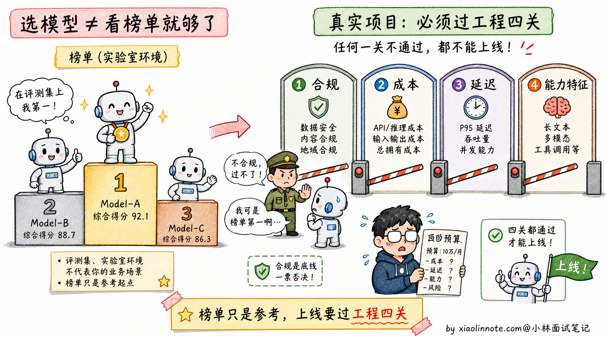
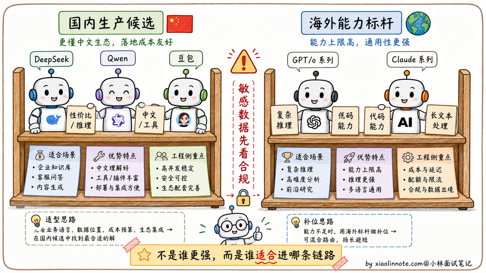
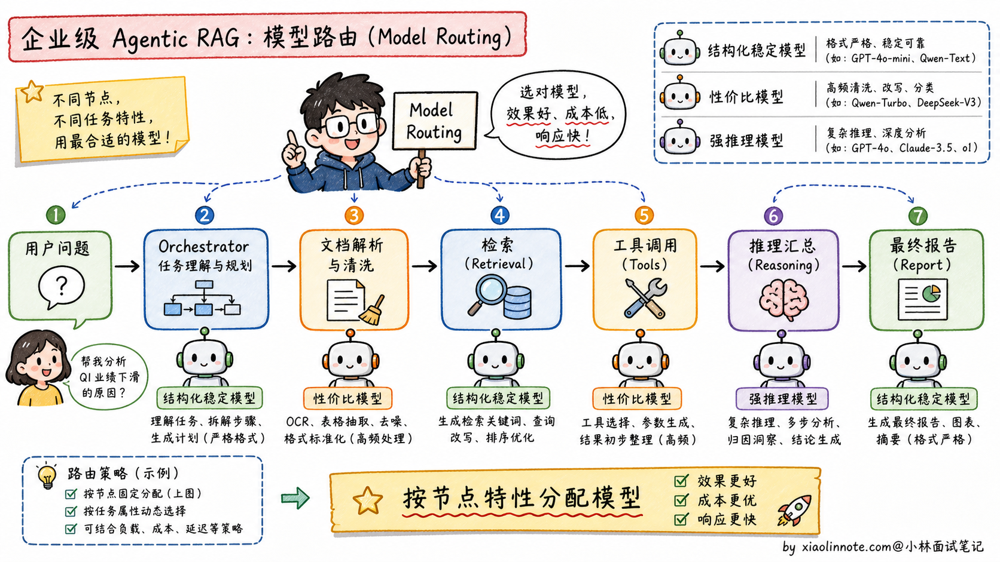
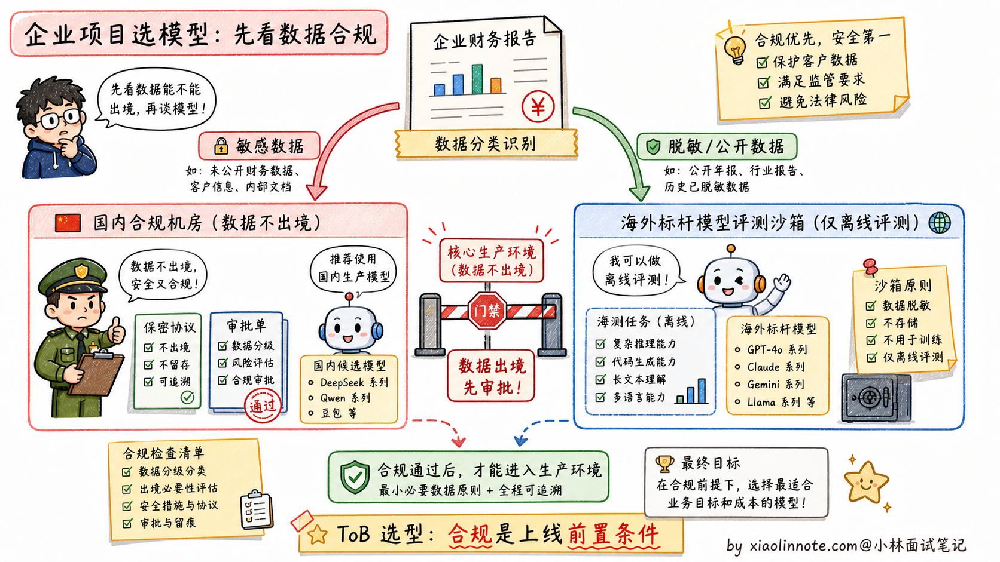

对比使用过哪些主流大模型？你们项目中最终选用了哪个模型？为什么？
👔面试官：来讲讲你对比过哪些主流大模型？项目里最终选了哪个？为什么？
🙋♂️我：我们用了 GPT-5.5 / Claude Sonnet 4.6，因为它们能力最强，在排行榜上排名靠前。
👔面试官：……「能力强」「排行榜靠前」是表面话。你们是面向什么用户的项目？数据合规要求是什么？API 成本受得了吗？这些都没说，就直接选最贵的，是典型的新人决策方式。
🙋♂️我：呃，我们项目是面向国内企业用户的……
👔面试官：那你怎么用 GPT-5.5？数据出境合规怎么过？再说，国内企业项目不能只看海外模型能力强不强，还要看数据能不能出境、接口能不能稳定访问、成本能不能扛住，你这个选型方向就错了。
🙋♂️我：呃……
👔面试官：典型的「不看场景、跟着排行榜选」。模型选型从来不是看跑分最高，是看「合规、成本、延迟、能力特征」四个维度匹配业务需求。这种工程化的选型思路你有没有？回去搞清楚再来。
被这几个问题逼到墙角才意识到，模型选型这道开放题考的不是「谁最强」，是「在我的业务约束里谁最合适」。合规、成本、延迟、能力，四条线得一起拉，才答得到点上。
💡 简要回答
在项目选型阶段，我会先把模型分成两类：一类是国内可落地的生产候选，比如 DeepSeek、Qwen、豆包这类模型；另一类是海外能力标杆，比如 GPT-5.5 / o 系列、Claude Sonnet / Opus 系列，用来做能力上限参照。
如果是面向国内企业用户的 Agentic RAG 系统，我倾向于把国内模型作为主链路候选，海外模型只做离线评测或非敏感场景兜底。原因不是海外模型不好，而是企业项目里合规、网络稳定性、成本预算、售后支持这些约束会直接决定方案能不能上线。
最终落地时，我不会死磕一个模型，而是用 Model Routing（模型路由）：格式要求严格、Tool Use 多的节点优先选指令遵循和结构化输出稳定的模型；高频推理、数据清洗、摘要归纳这类节点优先选性价比高的模型；特别难的问题再路由给能力更强但更贵的模型。选模型从来不是看谁跑分最高，而是看谁最契合业务的合规、成本、延迟与能力特征。
📝 详细解析
1. 为什么不能盯着「排行榜」无脑选？
很多新手选模型喜欢盯着大模型榜单，看谁排第一就想用谁，这在工程落地时是个巨大的坑。
跑分高，不代表在你的特定业务里表现好。比如海外标杆模型在多模态、代码、复杂推理上通常很强，但它的 API 成本、数据出境、网络访问、企业合同支持，都可能卡住国内 ToB 项目；有些模型榜单漂亮，但在你的财报格式、行业黑话、内部接口调用上不一定稳定；如果系统存在大量高频的 Agent 内部循环调用，硬上最贵的标杆模型，可能一个月就把项目预算烧穿。

2. 主流大模型横向盘点（2026 年视角）
在评估时，我通常把模型分为「国内生产候选」和「海外能力标杆」两个阵营。这里的模型名不要当成固定答案，因为 2026 年模型版本迭代很快，面试时更重要的是讲清选型逻辑。
国内生产候选（实际落地优先看）
- DeepSeek 系列：特点是推理和性价比突出，适合放在高频分析、代码辅助、长链路推理这类成本敏感的节点上。但具体选 V 系列还是 R 系列，要看任务是偏通用生成还是偏推理。
- Qwen 系列（通义千问）：中文语境、工具调用、结构化输出、长上下文这些能力比较适合企业级应用，尤其适合做主调度、文档理解、RAG 汇总这类要求稳定性的节点。
- 豆包 / 火山引擎系列：工程生态、并发能力、中文产品化体验是它的优势，适合高频文本处理、客服、内容生成、批量分类这类吞吐优先的场景。
海外能力标杆（评测与非敏感兜底）
- GPT-5.5 / o 系列：适合作为复杂推理、代码、多模态能力的标杆模型。国内企业项目里通常要谨慎放到核心链路，重点评估数据出境、合规审批、网络稳定性和成本。
- Claude Sonnet / Opus 系列：长文本、代码、Agent 调度能力很强，也常被用来做评测基准或兜底模型。但它同样要先过合规、成本和可用性这几关。

3. 我们最终选型落地的思考逻辑
我们的项目是一个企业级多智能体 RAG 问答系统，业务链路涉及：解析长篇企业财报 -> 多个 Agent 规划拆解任务 -> 频繁调用公司内部的数据库与搜索引擎 -> 汇总生成中文报告。
基于这个真实场景，我们没有死磕单一模型，而是设计了「大模型路由分配（Model Routing）」策略：
主调度节点（Orchestrator）和格式要求严格的节点，优先选结构化输出稳定、Tool Use 准确率高、长上下文指令遵循好的模型。在这个环节，Agent 需要频繁调用内部 API，JSON、函数参数、字段名都不能乱，所以「稳定」比「榜单第一」更重要。
逻辑推理与高频数据清洗节点，优先选推理能力和 token 单价更均衡的模型。在对财报数据做归纳、比对、异常解释时，很多调用不是面向用户的最终回答，而是 Agent 内部中间步骤，这类节点最怕成本失控，所以要把便宜且够用的模型用起来。

最重要的合规底线是：敏感商业数据尽量留在合规可控的链路里。国内 ToB 项目里，海外模型不是绝对不能用，但必须先看数据分类分级、客户合同、监管要求和企业审批。只要这几关过不了，再强的模型也只能做离线评测，不能进核心生产链路。

🎯 面试总结
回到开头那段对话，问到大模型选型，最重要的是先把选型不是看排行榜讲清楚。模型选型从来不是看跑分最高，是看「合规、成本、延迟、能力特征」四个维度匹配业务需求。这一句先讲到，面试官就知道你不是会背榜单的新人，是真的想过工程问题。
接下来讲清主流大模型的定位。国内候选重点看 DeepSeek 的推理和性价比、Qwen 的中文和工具调用、豆包的工程生态和并发能力；海外标杆重点看 GPT-5.5 / o 系列、Claude Sonnet / Opus 系列在复杂推理、代码、长文本上的能力。能讲出每家模型的「特长」而不只是「排名」，会让面试官知道你真的用过对比过。
最关键的是讲选型落地的思考逻辑。不是死磕单一模型，而是设计「模型路由（Model Routing）」策略，按节点特性分配模型。比如格式要求严格的调度节点用结构化输出稳定的模型，高频推理任务用性价比高的模型，敏感数据链路优先走合规可控的模型。这种「根据任务特性混合用多个模型」的工程思路，是 2026 年 AI 应用里很常见的做法。
如果还想再加分，可以提一句合规约束的现实意义：国内 ToB 项目里，数据出境合规是死线，再强的海外模型也不能用。这种「业务约束优先于技术先进性」的判断，会让面试官知道你真的在国内企业项目里跑过流程。能讲到这一层，这道题就答得很完整了。